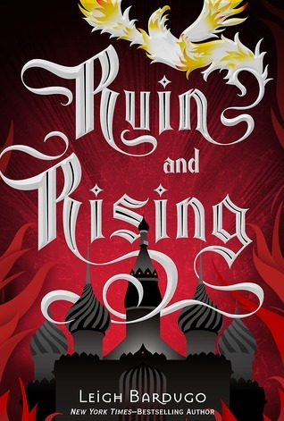

Ruin and Rising

˗ˏˋ ★ ★ ★ ★ ˎˊ˗
I liked this book and I thought it was a very good ending to the series. I think it was very interesting to read about and a very hooking story.
The book starts off a little slow as Alina is just biding her time as the Darkling in ravaging Ravka with his shadow army.
I enjoyed the history of Morozova and the search for his last amplifier. I thought this gave us more insight into the history of this magical world and found it very interesting.
I liked Nikolai's return as I quite liked him as a character but was so devastated when he was captured and turned into the hybrid shadow man. I was glad Alina and everyone else escaped but felt so bad for Nikolai.
I really liked the plot twist that Mal was actually the firebird. I feel like this added a lot more purpose to his character and also was so heart wrenching. I also like how Mal accepts this and urges Alina to do what's right for the country. I found this to show that he had developed from the last book when he was feeling useless to finally having a devastating purpose.
The final battle was what the whole series had been building up too. I did not like the twist that Alina actually loses her powers. This annoys me because I hate it when the main character loses their powers. I feel like it is such a useless plot twist. I did however enjoy the Darkling begging to be remembered as a good person.
I am happy that she is able to fake her death and live a peaceful life without her powers and responsibilities. I thought it was an okay ending but I am glad she is with Mal and Nikolai is leading.
Overall I thought this series was a good series and I would recommend it for someone who is starting off in fantasy. I also like how there was an opportunity to develop the story in the future.
Write a Review